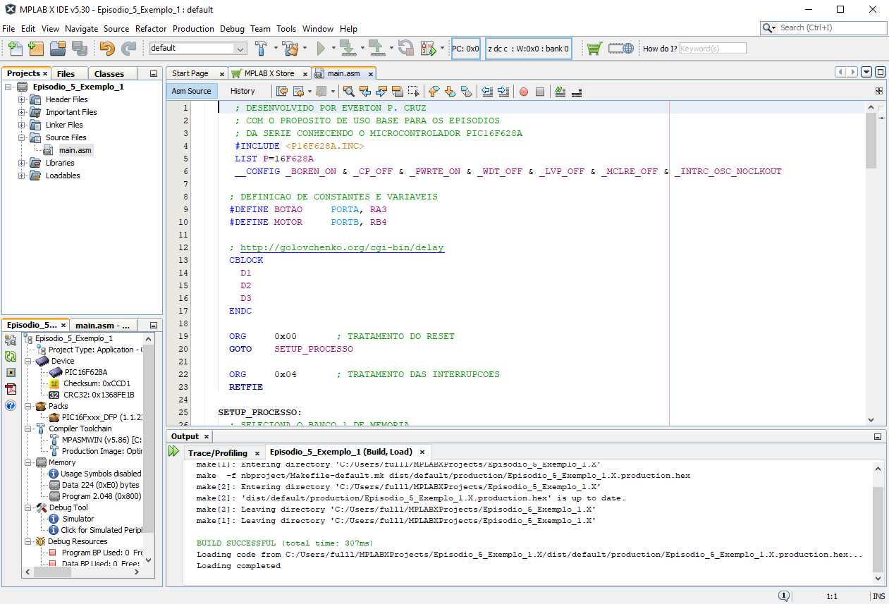
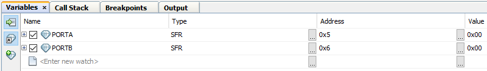

Episódio 5: Conhecendo as instruções GOTO, MOVLW, MOVWF, MOVF, BCF, BSF, BTFSC e BTFSS para o PIC16F628A. Execução passo a passo do código
O PIC16F628A é controlado por vários registradores e 35 instruções conforme Figura 5.1 e neste episódio vamos abordar as instruções GOTO, MOVLW, MOVWF, MOVF, BCF, BSF, BTFSC e BTFSS.
| Figura 5.1 - Conjuntos de instruções |
|---|
| Fonte: MICROCHIP 2020 (b) página 118 |
A primeira instrução, que é muito usada, é a instrução GOTO k, a qual é responsável por ir (saltar) para um endereço (rótulo) k da memória de programa.
| Código 5.1 - Exemplo do usa da instrução GOTO k |
|---|
|
| Fonte: Autor 2020 |
No Código 2.1 pode-se ver um exemplo do uso da instrução GOTO a qual, nos comentários são feitas as sequências de execuções.
Na linha 5, se o bit RA0 do registrador PORTA estiver setado (valor 1), salta-se uma instrução, isto é, salta-se a instrução GOTO na linha 7, indo para a linha 9 para executar a instrução NOP, conforme seta no comentário. Mas se RA0 estiver limpo (valor 0), a próxima instrução GOTO da linha 7 é executada, também conforme comentário e fazendo a execução do programa saltar para a linha 3 e executar a próxima instrução após esta linha, sendo ela a instrução BTFSS da linha 5.
A próxima instrução é MOVLW k que é responsável por mover (atribuir) um literal (valor de 8 bits) k ao registrador W. Para colocar valores literais em outros registradores, primeiramente deve ser movido (atribuído) para o registrador W.
| Código 5.2 - Exemplo do usa da instrução MOVLW k |
|---|
|
| Fonte: Autor 2020 |
Na linha 5 do Código 5.2, o literal B'00001011' em binário é armazenado no registrador W. Já na linha 6, foi armazenado o literal O'14' em octal no registrador W. Nas linhas 7 e 8 tem-se o armazenamento dos números 10 escritos em decimal (D'10' e .10). Nas linhas 9 e 10 tem-se o armazenamento dos números 11 escritos em hexadecimal (H'0B' e 0x0B) e por último nas linhas 11 e 13 tem-se o armazenamento dos caracteres "%" e "#" (A'%' e '#') no registrador W. Nas linhas 11 e 13 do Código 5.2, os caracteres armazenados, sendo eles:
são baseados na tabela ASCII que pode ser vista em https://en.wikipedia.org/wiki/ASCII.
A próxima é a instrução MOVWF f que é responsável por mover (copiar) o literal (valor de 8 bits) que está no registrador W para o registrador de endereço f.
| Código 5.3 - Exemplo do usa da instrução MOVWF f |
|---|
|
| Fonte: Autor 2020 |
Na linha 3 do Código 5.3, o conteúdo do registrador W foi movido (copiado) para o registrador de endereço 0x0C (endereço contido no intervalo de registradores de uso geral do microcontrolador PIC16F628A) conforme visto anteriormente.
A instrução MOVF f, d é responsável por mover (copiar) o literal (valor de 8 bits) que está no registrador de endereço f para o registrador W (se d=0) ou para o registrador de endereço f (se d=1).
| Código 5.4 - Exemplo do usa da instrução MOVF f, d |
|---|
|
| Fonte: Autor 2020 |
Na linha 3 do Código 5.4 tem-se a instrução que está sendo usada para fazer cópia de valor contido no registrador STATUS, para o registrador W. Esta instrução é a "parceira" da instrução MOVWF.
A instrução BCF f, b é responsável por resetar (limpar) o bit b do registrador de endereço (rótulo) f, isto é, colocar o valor 0 no bit b. Na linha 5 do Código 5.5, pode-se ver a aplicação dessa instrução ao limpar o sexto bit do registrador de endereço 0x0C. Essa instrução será muito útil ao trabalhar com estados de portas, como também estados de interrupções, e configurações do microcontrolador, entre outros.
A instrução BSF f, b é responsável por setar o bit b do registrador de endereço (rótulo) f, isto é, colocar o valor 1 no bit b. Esta instrução é semelhante à instrução BCF, sendo que esta limpa enquanto que a instrução BCF reseta (coloca o valor igual a 1 no estado do bit) e isso pode ser visto nos Código 5.5 e Código 5.6 no qual exibem exemplos de usos.
| Código 5.5 - Exemplo do usa da instrução BCF f, b |
|---|
|
| Fonte: Autor 2020 |
| Código 5.6 - Exemplo do usa da instrução BSF f, b |
|---|
|
| Fonte: Autor 2020 |
Tanto a instrução BCF quanto a instrução BSF modificam bits de registrador, o Código 5.5 gera como resultado o valor exibido na Tabela 5.2, enquanto que o Código 5.6 gera como resultado o valor exibido na Tabela 5.3.
| Tabela 5.1 - Representação do número 197 em dígitos binários | ||||||||
|---|---|---|---|---|---|---|---|---|
| Binário | Decimal | |||||||
| bit 7 | bit 6 | bit 5 | bit 4 | bit 3 | bit 2 | bit 1 | bit 0 | 197 |
| 1 | 1 | 0 | 0 | 0 | 1 | 0 | 1 | |
| Fonte: Autor 2020 | ||||||||
| Tabela 5.2 - Representação do resultado da execução do Código 5.5 | ||||||||
|---|---|---|---|---|---|---|---|---|
| Binário | Decimal | |||||||
| bit 7 | bit 6 | bit 5 | bit 4 | bit 3 | bit 2 | bit 1 | bit 0 | 133 |
| 1 | 0 | 0 | 0 | 0 | 1 | 0 | 1 | |
| Fonte: Autor 2020 | ||||||||
| Tabela 5.3 - Representação do resultado da execução do Código 5.6 | ||||||||
|---|---|---|---|---|---|---|---|---|
| Binário | Decimal | |||||||
| bit 7 | bit 6 | bit 5 | bit 4 | bit 3 | bit 2 | bit 1 | bit 0 | 213 |
| 1 | 1 | 0 | 1 | 0 | 1 | 0 | 1 | |
| Fonte: Autor 2020 | ||||||||
Outra instrução importante é a instrução BTFSC f, b que é responsável por testar/verificar se o bit b do registrador de rótulo/endereço f está limpo (clear). Se estiver limpo (valor igual a 0) a próxima instrução é ignorada e o fluxo do programa segue normalmente. Se estiver setado (valor igual a 1), executa a próxima instrução e segue o fluxo do programa normalmente.
| Código 5.7 - Exemplo do usa da instrução BTFSC f, b |
|---|
|
| Fonte: Autor 2020 |
| Código 5.8 - Exemplo do usa da instrução BTFSC f,b |
|---|
|
| Fonte: Autor 2020 |
No Código 5.7 pode-se ver na linha 7 o uso da instrução BTFSC a qual quando executada faz saltar (salta se limpo, isto é, pois o bit da posição b=5 é igual a 1)) a instrução seguinte contida na linha 9 enquanto que a instrução seguinte a linha ignorada é executada (linha 11).
O Código 5.8 mostra o caso quando o bit b não está limpo, no qual não ignora a instrução seguinte e segue o fluxo do programa normalmente.
E por último a instrução BTFSS f, d que é responsável por testar se o bit b do registrador f está setado (valor igual a 1). Se estiver setado (valor igual a 1) salta a próxima instrução, ignorando-a e seguindo o fluxo do programa. Se estiver limpo (valor igual a 0), executa a próxima instrução e segue o fluxo normal do programa.
Na linha 7 do Código 5.9, o comando BTFSS verifica se o sexto bit do número armazenado no registrador de endereço 0x0C (registrador de uso geral) está setado, que no caso é o valor 19710 = 1100.01012, sendo que o sexto bit é 0. Logo não salta-se a próxima instrução contida na linha 9, mas executando-a.
| Código 5.9 - Exemplo do usa da instrução BTFSS f, d |
|---|
|
| Fonte: Autor 2020 |
| Código 5.10 - Exemplo do usa da instrução BTFSS f, d |
|---|
|
| Fonte: Autor 2020 |
Já na linha 7 do Código 5.10, a instrução BTFSS verifica se o terceiro bit do número armazenado no registrador de endereço 0x0C está setado, que no caso o valor é 19710 = 1100.01012, sendo que o terceiro bit é 1. Logo salta-se a próxima instrução contida na linha 9, executando a instrução da linha 11 e as instruções seguintes.
Agora vejamos o processo de execução passo a passo (debug) de um código exemplo para testarmos o processo como um todo.
Primeiramente vejamos o conceito de fluxograma para podermos usar neste exemplo. Assim, conforme https://en.wikipedia.org/wiki/Flowchart:
Um fluxograma é um tipo de diagrama que representa o fluxo de trabalho ou processo. Um fluxograma pode também ser definido como um representação diagramática de um algoritmo, uma abordagem passo a passo para resolver uma tarefa.
Com essa informação, pode-se ver na Tabela 5.4 algumas formas utilizadas em fluxogramas para representação em algoritmos.
| Tabela 5.4 - Formas para fluxogramas | |||||||||||||||||||||
|---|---|---|---|---|---|---|---|---|---|---|---|---|---|---|---|---|---|---|---|---|---|
|
|||||||||||||||||||||
| Fonte: WIKIPEDIA (2020b) |
Vejamos um exemplo no qual vamos executar passo a passo e ver o funcionamento do código e de algumas instruções baseadas no fluxograma da Figura 5.2.
No fluxograma da Figura 5.2, o bloco condicional "BOTÃO PRESSIONADO?", ao botão está associado o pino RA3, enquanto que o motor, através de um relé, está associado ao pino RB4 e para o processo de espera (delay) de 500 milisegundos, iremos fazer uso da implementação contida em http://www.piclist.com/techref/piclist/codegen/delay.htm.
A implementação do fluxograma contida na Figura 5.2 é dada no Código 5.11.
| Figura 5.2 - Fluxograma do Exemplo |
|---|
| Fonte: Próprio autor (2020) |
| Código 5.11 - Codificação do fluxograma da Figura 5.2 |
|---|
|
| Fonte: Autor 2020 |
Para começarmos o processo, reveja o episódio 2 para criação do projeto e também do arquivo no qual você irá copiar o Código 5.11 (retirando as numerações a esquerda, ou baixando o arquivo em https://github.com/KyryIx/programando-com-o-microcontrolador-PIC16F628A/blob/main/Código 5.11 - Codificação do fluxograma da Figura 5.2.asm) para podermos começar com a compilação e também a execução passo a passo (debug).
Para testar se ocorreu tudo corretamente no processo de copiar e colar o Código 5.11, clique no menu → (pode ser utilizada a tecla ), com isso começará o processo de compilação do seu projeto e caso houver algum erro ele exibirá e o usuário deverá corrigi-lo, sendo que muitas vezes pode ser copiado o erro e pesquisado no Google uma solução e com o tempo você irá aprendendo a corrigir sozinho.
Caso o processo de compilação seja executado com sucesso, a Figura 5.3 exibe a tela com a mensagem BUILD SUCCESSFUL em verde. Caso houvesse algum erro, exibirá a mensagem BUILD FAILED em vermelho conforme a Figura 5.4.
| Figura 5.3 - Tela de resultado de sucesso da compilação do Código 5.11 |
|---|
|  |
| Fonte: Próprio autor (2020) |
| Figura 5.4 - Tela de resultado de falha da compilação do Código 5.11 |
|---|
| Fonte: Próprio autor (2020) |
Com o arquivo do Código 5.11 aberto, clique no número da linha 20 no qual tem a instrução "GOTO SETUP_PROCESSO" e clique no menu → (pode ser utilizada a sequência como também um clique com o botão esquerdo sobre o número da linha), que na sequência aparecerá um quadrado vermelho sobre o número da linha, além de esta linha ficar toda vermelha, indicando que quando começar a execução do código, ele irá parar nesta linha (breakpoint - ponto de parada) e desta forma poderemos executar instrução após instrução e ver os resultados gerados por essas instruções, este processo pode ser visto na Figura 5.5.
| Figura 5.5 - Tela de marcação do breakpoint |
|---|
| Fonte: Próprio autor (2020) |
Como já marcamos onde queremos parar, já podemos começar o processo de execução passo a passo, e para isso precisamos acessar o menu → e automaticamente aparece uma seta verde na linha 20 e ela fica selecionada em verde conforme Figura 5.6.
| Figura 5.6 - Tela de parada do breakpoint |
|---|
| Fonte: Próprio autor (2020) |
Agora que já sabemos como parar a execução de um programa em um local específico, veremos como executar linha por linha deste código e para isso vamos fazer uso novamente do menu
No menu começaremos pela opção → (ou tecla ) o qual a cada clique nessa opção é pulada para a próxima instrução (não é executada linhas, mas sim instruções, pois entre duas instruções podem ter uma linha em branco que é ignorada pela opção e outras funções, pois linhas em branco não são instruções).
Ao executar sucessivas vezes a opção , o processo cairá em um loop por causa na opção que colocamos de botão pressionado para ligar ou desligar o motor, e para contornar essa ação do botão pressionado, precisamos modificar o estado do bit associado ao botão, que no Código 5.11 é o bit RA3 do registrador PORTA, não esquecendo que queremos também saber o estado do motor, e para isso precisamos ver o estado do bit RB4 do registrador PORTB.
Para podermos modificar o bit RA3 como também saber o estado do bit RB4, precisamos ter acesso a eles e para isso vamos visualizarmos o estado dos bits dos registradores PORTA e PORTB, acessando o menu → (ou a sequência de teclas ) e abrirá uma tela conforme Figura 5.7 o qual incluímos primeiramente o registrador PORTAe repetimos novamente o mesmo procedimento para incluir o registrador PORTB.
| Figura 5.7 - Tela de inclusão de visualização de registradores |
|---|
| Fonte: Próprio autor (2020) |
Com isso temos como resultado a Figura 5.8 e expandindo podem-se ver os bits dos dois registradores conforme Figura 5.9.
| Figura 5.8 - Tela de visualização dos registradores |
|---|
|  |
| Fonte: Próprio autor (2020) |
| Figura 5.9 - Tela de visualização dos registradores e bits |
|---|
| Fonte: Próprio autor (2020) |
Agora, pode-se modificar o valor/estado do bit RA3 dando um duplo clique na linha RA3 no campo "value" e colocando o valor "1" para dizer que o botão foi pressionado e com isso o processo segue para ligar o motor, conforme pode-se ver ao executar alguns passos e exibido na Figura 5.10.
| Figura 5.10 - Tela de visualização dos registradores e bits em execução |
|---|
| Fonte: Próprio autor (2020) |
E com isso terminamos nosso exemplo e a execução passo a passo. No próximo Episódio (episódio 6) veremos um exemplo completo, enquanto que no Episódio 7 veremos como fazer a gravação do exemplo do episódio 6.